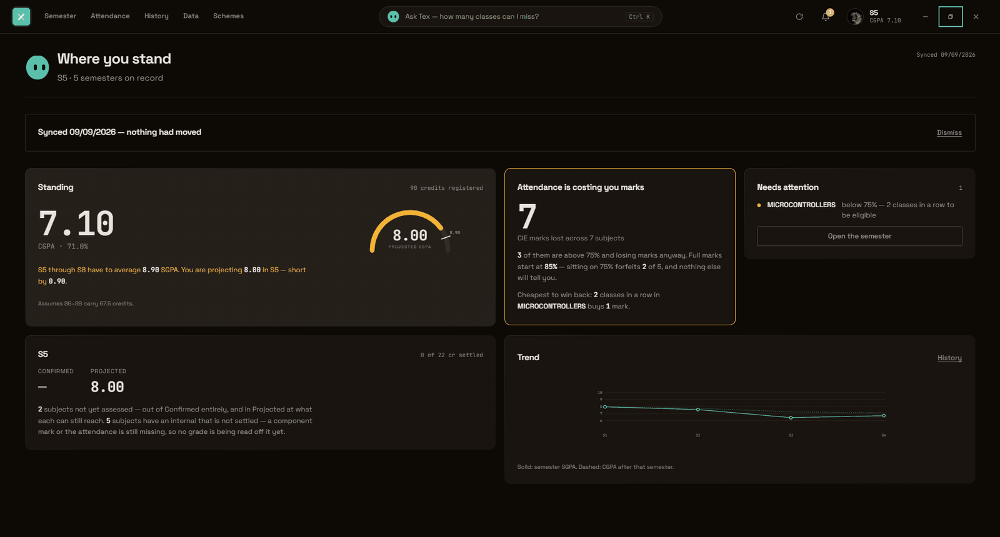

The mark you need, per subject
Both pass conditions, not one: the 40% separate end-semester minimum as well as the combined total. Spreadsheets miss the first, which is how a subject that “looked passed” comes back as a supplementary.
Three ways into one record — your semester, your attendance, and Tex, which answers in your own words and shows the working. If your college runs etlab, it works for you.
Free for students, forever — written into the licence.
Your record is a file on your own machine, and no account is needed
to use any of it.
RegulationR 7.5.ii
Under Regulations 2024, attendance is not only an eligibility gate — it is a scored component of your internal marks, worth up to 5 of them, in every subject, in bands. Full marks start at 85%.
So a student sitting comfortably above the 75% line is still forfeiting marks, in every subject, quietly, all semester. No portal shows this. Nothing else computes it. It is the single largest number most students never see.
What itdoes
Both pass conditions, not one: the 40% separate end-semester minimum as well as the combined total. Spreadsheets miss the first, which is how a subject that “looked passed” comes back as a supplementary.
Computed from real attended-over-held counts, with duty leave credited the way R 6.3.ii actually caps it — at 10% of classes held, which grows as you spend it. Answered as a number of classes, not a percentage.
Name a target. TargetX works backwards to the SGPA each remaining semester has to carry, then to which subject is cheapest to push and how far — balanced so the plan is one a person can actually attempt, rather than four subjects at 95.
Sign in to your college’s etlab portal and it pulls every semester, attendance, series marks, grades and published SGPA in one pass. Your password is used for that one request and never stored — or skip it entirely and type things in by hand.

A note fromme
Not because it stopped working. It works — this release fixes two things students reported, and the assistant answers properly for the first time. It is the best version there has been.
It is the last one because reading your portal on your behalf has a ceiling that no amount of careful engineering raises. A product that signs in with your password cannot be sold to your college — it would not survive a security review, and it should not. Which means the people who could pay for this, so that you never have to, can never be customers. And it can be switched off by someone else on an ordinary afternoon, with no notice and nothing I could do about it.
The questions I actually want to answer are on the other side of that wall anyway. Which students are about to lose exam eligibility. What a class is collectively struggling with. Whether the internal marks a college submits are even right. None of that is reachable from one student’s login, and all of it matters more than a number on my own screen.
So I am building the thing that does not have the problem — properly, with an institution’s own data and its own permission. The regulation engine underneath this app, the part that took longest and is tested hardest, is the part that carries over.
I started this because I was a student who wanted to know what mark I
actually needed, and the portal would not tell me. That part is
finished, and it is yours.
— Rishi
Getthe app
A desktop app — Windows, macOS and Linux. It installs for your user account only, so it needs no administrator rights, and it runs entirely offline apart from the portal you point it at.
Recommended for you
Windows · installer
| Platform | File | Size | Download |
|---|---|---|---|
| Windows | .exe installer, and .msi for deployment unsigned | — | Releases |
| macOS | .dmg, universal not notarised | — | Releases |
| Linux | .AppImage and .deb | — | Releases |
SHA256SUMS-<platform>.txt beside the installers, so
you can check that what you downloaded is what was built. In
PowerShell:
Get-FileHash .\TargetX_<version>_x64-setup.exe -Algorithm SHA256
A certificate is on the list. A checksum proves the file did not
change in transit, not who built it — it is not a substitute, and this
page will say so until one is bought.
xattr -dr com.apple.quarantine /Applications/TargetX.app
Check the SHA-256 above first. Running that command on software you
have not verified is exactly how the protection is meant to be used
against you, and it is worth being suspicious of any page that tells
you to type it — including this one.
Where yourdata lives
Your marks are a file in your own user profile. Nothing about them is transmitted anywhere, and there is no telemetry, no analytics and no crash reporting — the app makes network requests to exactly four places, and the fourth only if you choose to sign in:
Forcolleges
TargetX is licensed under BUSL-1.1, and the right of an individual student to use it free, forever, is written into the licence rather than offered as a policy that could be withdrawn. Deploying it across an institution is a commercial use.
Somethingwrong?
TargetX has been proved against one college’s portal and one set of regulations read carefully. Neither of those is the same as being right everywhere. If a figure it shows you disagrees with what your college recorded, the college is right and this is a defect — and it is one worth knowing about, because the same arithmetic runs for everyone.
Report a problem
GitHub issues
Questions and “will this work at my college?” belong in discussions rather than issues. Security problems should not be filed in public at all — use GitHub’s private advisory form, which is only visible to the maintainer.